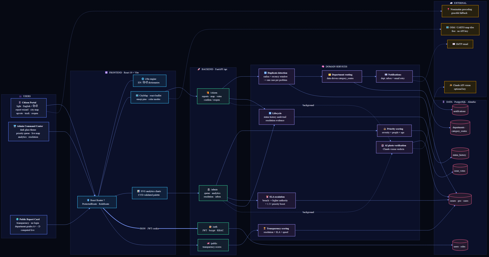
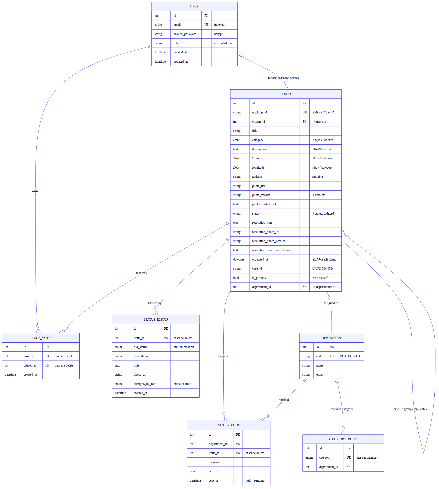

A complete study guide to the system: the design approach and the reasoning behind it, the layered architecture, every feature explained with its rules and formulas, and the full database schema.
Municipal complaint systems fail in four predictable ways. SmartCity is designed around fixing exactly these.
| Failure | What actually happens |
|---|---|
| Duplicate flooding | One pothole generates fifteen tickets. Staff spend their time de-duplicating instead of fixing, and the queue length stops meaning anything. |
| No feedback loop | The citizen submits into a void — no tracking number, no status, no notification. They assume nothing happened and report again, worsening the first problem. |
| Manual triage | A human decides which department owns each complaint and which is urgent. This is slow, inconsistent, and the first thing to collapse under load. |
| No accountability | Nobody — citizen, press, or the city itself — can see which department resolves things and which sits on them. |
These are the choices that shape everything else. Understand these and the rest of the system is predictable.
Reports are not tickets. A report joins a case; the case is the unit of work. Fifteen reports of one pothole form one case with fifteen reporters — and the reporter count becomes a priority signal rather than queue noise. This single decision is why the admin queue is short, why priority scoring is meaningful, and why resolving once satisfies everyone.
Category → department routing lives in a database table, not an if/elif chain.
Adding a category or reorganising departments is an INSERT, not a redeploy.
A pothole and a burst water main are not the same shape of problem, so they don't share a deduplication radius, a persistence window, an urgency, or a deadline. Five independent constants are tuned per category (see §3.4).
Every protected route is guarded by a role dependency in FastAPI. The frontend route guard
is a convenience for UX; it is never the boundary. A citizen calling an admin URL directly
still gets 403.
Geocoding failure, AI unavailability, or a dead mail server must not prevent a report being
filed. Each of those degrades to a fallback — coordinates instead of an address, an
UNVERIFIED verdict, a queued retry — and the submission still succeeds.
Status is a single mutable column, but every change to it appends an immutable row to
status_history. The current state is cheap to query; the full story is never lost.
The transparency score is unauthenticated and computed live from the same rows the admins work from. There is no separate "public" dataset to massage, and the scoring method is printed on the page.
| Layer | Technology | Responsibility |
|---|---|---|
| Users | Browser (desktop + mobile) | Three distinct surfaces: citizen portal, admin command center, public report card. |
| Frontend | React 19, Vite, React Router 7 | Route guarding, i18n, the Leaflet map component, hand-built SVG charts. Calls the API on a relative /api path. |
| API | FastAPI, Pydantic v2 | Four routers — /auth, /citizen, /admin, /public. Validation, auth, and role enforcement live here; business rules do not. |
| Domain services | Plain Python | Where the thinking happens: duplicate detection, routing, priority, SLA, lifecycle, transparency, AI verification, notifications. Framework-free and directly unit-testable. |
| Data | PostgreSQL, SQLAlchemy 2, Alembic | Seven tables, seven migrations. All state, including the audit trail. |
| External | OSM/CARTO, Nominatim, Claude, SMTP | Map tiles, geocoding, vision verdicts, email. Every one of them is optional or has a fallback. |
find_open_case_id,
run_sla_escalations and build_transparency_report take a database session
and plain arguments — no request, no response, no framework. That is what makes 110 backend
tests fast and makes the rules readable without tracing HTTP plumbing.
The full architecture diagram is reproduced on the next page as a full-page plate — turn the page clockwise to read it. It shows data flow across all six layers; solid lines are direct calls and dotted lines are background tasks and calls to external services. Every box corresponds to a real module listed in §2.4.

| # | Layer | What happens |
|---|---|---|
| 1 | Frontend | Wizard validates each step client-side; multipart POST /api/citizen/issues with progress tracking. |
| 2 | API | citizen_only dependency decodes the JWT and asserts the role. Pydantic validates the body; the photo is size- and magic-byte-checked. |
| 3 | Service | Photo saved under a generated filename. Duplicate detection runs before the insert. |
| 4 | Service | Row inserted; tracking_id and case_id assigned; department resolved from the routing table. |
| 5 | Data | Creation entry appended to status_history; a notification row is queued if this is a new case. |
| 6 | API | Response returns with the tracking ID — the citizen is done. |
| 7 | Background | After the response: email delivery is attempted and the photo is sent for AI verification. |
Steps 6 and 7 are the important ordering: nothing slow or external sits between the citizen and their confirmation.
| Path | Contents |
|---|---|
backend/app/api/ | Routers: auth.py, citizen.py, admin.py, public.py |
backend/app/services/ | Domain logic: citizen, admin, routing, lifecycle, escalation, votes, transparency, city_map, photo_verification, notification |
backend/app/core/ | config, database, security, dependencies (RBAC), issue_types (the constants), storage, roles, notifier |
backend/app/models.py | All seven SQLAlchemy models |
backend/alembic/versions/ | Seven migrations, 001 → 007 |
frontend/src/citizen/ | Citizen pages, the report wizard, the location picker |
frontend/src/admin/ | Dashboard, analytics panel, admin service |
frontend/src/shared/ | CityMap, StatusBadge, i18n.jsx, constants.js (colour palettes) |
Purpose. Two roles with genuinely different interfaces and permissions, enforced where it counts.
| Aspect | Behaviour |
|---|---|
| Password storage | bcrypt via passlib |
| Token | JWT (HS256) carrying sub, role, type:"access", exp |
| Transport | HTTP-only cookie; Authorization: Bearer also accepted |
| Lifetime | 30 minutes by default (ACCESS_TOKEN_EXPIRE_MINUTES) |
| Enforcement | require_roles(...) FastAPI dependency on every protected route |
| Privilege escalation | Signup ignores any client-supplied role — always CITIZEN. Admins are made by CLI script or startup bootstrap. |
403 would confirm that the
requested tracking ID exists. The lookup therefore treats "doesn't exist" and "isn't yours"
identically, so the API cannot be used to enumerate valid IDs. Role mismatches still return
403 — there is nothing to hide about which endpoints are admin-only.
Purpose. Get a usable, located, evidenced report from someone standing on a street with one hand free.
| # | Step | Validation |
|---|---|---|
| 1 | Category | One of seven enum values |
| 2 | Location | Required; latitude −90…90, longitude −180…180. Address auto-filled, optional |
| 3 | Photo | Optional — see §3.3 |
| 4 | Description | Trimmed, 10–2000 characters |
| 5 | Review | Read-only summary; every row links back to its step |
Two ways to set the location, neither able to hard-fail: the browser Geolocation API
(high accuracy, 10-second timeout) or tapping/dragging the map pin. Either triggers an
abortable reverse-geocode; any failure resolves to null and the report proceeds on
coordinates alone.
On success the server assigns tracking_id = SMC-{year}-{id:06d},
a case_id, status SUBMITTED, and a department.
| Check | Rule | On failure |
|---|---|---|
| Non-empty | File has content | 400 |
| Size | ≤ 5 MB (MAX_UPLOAD_SIZE_BYTES) | 413 |
| Declared type | JPEG / PNG / WEBP if a Content-Type is sent | 400 |
| Actual bytes | Magic-byte sniff must match JPEG, PNG or WEBP | 400 |
Content-Type are both attacker-controlled.
A .exe renamed to .jpg with a spoofed header passes every other check and
fails this one. Signatures: JPEG FF D8 FF, PNG 89 50 4E 47 0D 0A 1A 0A,
WEBP RIFF…WEBP at offset 8.
Storage. Written to {UPLOAD_DIR}/issues/ or /resolutions/ under a
regenerated name (uuid4().hex + token_hex(4) + ext) — the user's filename never touches
the filesystem, eliminating path traversal and collisions. The storage layer is a
Protocol, so an S3 backend is one new class.
Purpose. Collapse many reports of one problem into a single unit of work, without losing any reporter's ability to track their own submission.
The category's radius in metres is converted to degrees, correcting longitude for latitude convergence:
The cos(latitude) term matters: a degree of longitude spans ~111 km at the equator but
~96 km at 30° N. Without it the box would be too wide in northern cities. The
max(…, 1.0) guard prevents division blow-up near the poles.
An existing issue matches when all six conditions hold:
| Condition | Meaning |
|---|---|
same category | Same kind of problem |
latitude within ± lat_delta | Inside the box |
longitude within ± lon_delta | Inside the box |
created_at > now − window | Recent enough to be the same occurrence |
status not RESOLVED/REJECTED | A fixed pothole that returns is a new case |
case_id is not null | Already grouped |
Ordered created_at ASC, id ASC, limit 1 — so the oldest case wins and reports always
attach to the original, never to a later duplicate.
case_id = matched case, is_primary = Falsecase_id = CASE-{own id:06d}, is_primary = True| Concern | Behaviour |
|---|---|
| Admin queue | Lists primaries only — one row per real-world problem |
| Status | Members have no independent status; they inherit the primary's effective status |
| Citizen view | Each reporter still sees their own report and tracking ID |
| Resolution | Resolving the primary satisfies every attached reporter |
| Reopen | A member reopening reopens the whole case |
| Counting | citizen_count = distinct citizens; report_count = total reports |
ix_issues_dup_lookup), and slight over-matching is the safer error — a
wrongly linked report is visible and correctable, while a missed duplicate silently splits a
case and re-creates the original problem.
Purpose. Get each report to its owning team with no human triage step.
resolve_department(db, category) reads the category_routes table (unique on
category) and falls back to General Administration when no row matches. Seeding is
idempotent, so it is safe to re-run on every deploy.
| Code | Name | Receives |
|---|---|---|
ROADS | Roads Department | Pothole |
ELECTRICAL | Electrical & Streetlighting | Streetlight |
SANITATION | Sanitation Department | Overflowing Garbage, Illegal Dumping |
WATER | Water & Drainage | Water Leakage, Broken Drainage |
PUBLIC_WORKS | Public Works | Damaged Public Property |
GENERAL | General Administration | Fallback + all SLA escalations |
Purpose. Order the work queue by real-world impact rather than arrival time.
| Factor | Effect |
|---|---|
| Severity weight (2–5) | A water leak outranks illegal dumping at equal size and age |
| People affected | Distinct reporters plus upvotes — mass-affecting problems climb |
| Age factor | +1× per week waited; nothing can be ignored indefinitely |
| Escalation boost | A breached case outranks comparable un-breached ones |
Worked example — a 3-day-old water leak (weight 5), 2 reporters, 1 upvote:
The UI colours the badge ≥20 high, ≥10 medium, else low.
Purpose. Guarantee that an ignored case eventually forces itself onto someone's desk.
The sweep runs opportunistically on every admin dashboard, analytics and queue request — there is no cron job or worker process to keep alive.
A case escalates when all four hold: it is a primary; its status is not closed;
escalated_at IS NULL; and now ≥ created_at + SLA_DAYS[category].
Four actions follow:
escalated_at = now — the idempotency guard, so a case escalates exactly once no matter how many times an admin reloads.SLA BREACH.escalated_at makes repeated runs free.
| Status | Shown to the citizen | Set by |
|---|---|---|
SUBMITTED | “We have received your report.” | System |
UNDER_REVIEW | “A city officer is verifying the details.” | Admin / citizen reopen |
IN_PROGRESS | “Work has started on this issue.” | Admin |
RESOLVED | “The issue has been fixed.” | Admin |
REJECTED | Could not be actioned | Admin |
Every event appends an immutable row to status_history: old status, new status,
note, optional photo, and whether a CITIZEN or ADMIN caused it. Recorded events are
submission, admin status change, resolution note, proof upload, SLA escalation, citizen
confirmation and citizen reopen. Migration 005 backfilled a synthetic creation entry for
pre-existing issues so no report has an empty history.
Case-level assembly: a duplicate reporter sees their own entries plus the shared case's entries, merged chronologically — never another reporter's private rows.
Admin side. A resolution note (≤2000 chars) and a proof-of-resolution photo are two independent operations, so a note can be attached while work is still in progress. The photo runs the identical validation as citizen uploads and triggers AI verification.
Citizen side. Once the case is RESOLVED the reporter is asked whether it actually
looks fixed:
| Action | Status effect | Recorded as |
|---|---|---|
| Confirm | Unchanged (stays RESOLVED) | “Reporter confirmed the problem is fixed.” |
| Reopen | Back to UNDER_REVIEW | “Reporter reopened the report — the problem is not fixed.” |
Both act on the case primary. If any one of five reporters reopens, the case returns to
the queue for everyone — a fix that didn't work cannot be closed by satisfying one row.
Attempting either on a non-resolved case returns 400.
VERIFIED would double the states the
UI, filters and analytics must handle, to record a fact that is inherently historical.
It lives in the audit trail instead — the state machine stays small.
Purpose. Let people amplify problems they didn't report, and feed that into prioritisation.
| Rule | Behaviour |
|---|---|
| Target | Must be a primary issue; otherwise 404 |
| Self-vote | Blocked if the citizen has any report in that case — 400 |
| Toggle | Voting again withdraws the vote — it is a switch, not an increment |
| Uniqueness | UNIQUE(issue_id, citizen_id) — double-submission cannot double-count |
One component serves both portals, differing only by a theme prop.
| Aspect | Behaviour |
|---|---|
| Data | Primary issues with coordinates only — members folded into their case |
| Tiles | OpenStreetMap (citizen, light) / CARTO Dark Matter (admin, dark) |
| Markers | L.divIcon emoji chips inside a coloured ring |
| Colour modes | By status or by category, toggled in the toolbar |
| Viewport | Auto fitBounds over all pins, capped at zoom 16 |
| Legend | Built from what is actually on screen, with live counts |
Every figure is aggregated per request — nothing cached, precomputed or seeded.
| Metric | Definition |
|---|---|
total_issues | Count of primary issues = real-world problems |
total_reports | Count of all issue rows = submissions |
open_issues | Primaries not RESOLVED/REJECTED |
avg_resolution_days | Mean updated_at − created_at over resolved primaries; null if none |
by_category / by_status | Counts including zeros, so chart axes stay stable |
departments | Per-department totals, open, resolved, average; “Unassigned” row only if needed |
The gap between total_reports and total_issues is the direct measure of how much noise duplicate detection removed.
Purpose. Make departmental performance externally visible and impossible to quietly massage.
| Score | Grade |
|---|---|
| ≥ 85 | A+ |
| ≥ 70 | A |
| ≥ 55 | B |
| ≥ 40 | C |
| < 40 | D |
Two deliberate guards. on_time_rate and speed_factor are 0 when nothing is
resolved — a department that never closes anything scores 0 rather than being flattered by an
empty average. A department with zero cases gets null, rendered “No data”, never an F.
Worked example — one pothole case resolved in 2 days (SLA 7):
Purpose. Give the reviewing officer a cheap first-pass signal on whether a photo matches its claim.
| Photo | Question asked |
|---|---|
| Report photo | “Does this plausibly show a {category}?” — given the description, explicitly tolerant of casual phone framing and lighting |
| Proof photo | “Does this plausibly show that issue repaired or resolved?” |
Verdicts are MATCH, MISMATCH or UNVERIFIED, obtained via a JSON-schema
structured output ({match, reason}) at low effort, with the reason truncated to 500
characters and shown as a badge tooltip.
UNVERIFIED with an explanatory note; nothing raises.
Both checks run as background tasks, so the HTTP response returns before the model is
even called. A report can never be blocked, delayed or rejected by the AI — the verdict is
advisory information for a human, not a gate.
Two-phase, so a broken mail server can never fail a citizen's submission.
sent_at IS NULL is attempted; on success the timestamp is stamped, on failure the row stays pending and the next submission retries it. Delivery is at-least-once and nothing is lost.NOTIFIER=console logs the email (safe default); email sends via SMTP. The admin inbox
shows the 50 most recent with an unread count and distinguishes delivered from pending.
A dependency-free layer: t(key, fallback) with English fallbacks inline in the components.
key.name. Adding a third language is one dictionary object and zero component changes.
Covered: navigation, dashboard, the full report wizard, categories and hints, statuses and
descriptions, the timeline, My Reports, issue details, activity history, confirm/reopen
prompts, the map toolbar/legend/popups, and AI verification notes. Persisted in
localStorage; unreadable storage falls back to English without error.
PostgreSQL, seven tables, accessed through SQLAlchemy 2 and evolved with seven
Alembic migrations. Every table carries created_at and updated_at from a shared
TimestampMixin.

issues: case_id groups duplicate reports into one case.
Column-level detail follows in §4.2.| Column | Type | Notes |
|---|---|---|
id | Integer | PK, autoincrement |
email | String(255) | Unique, indexed — the login identifier |
hashed_password | String(255) | bcrypt hash; the plaintext is never stored |
role | Enum | CITIZEN (default) or ADMIN; non-native enum → stored as VARCHAR |
created_at / updated_at | DateTime(tz) | Server defaults; updated_at auto-updates |
| Column | Type | Notes |
|---|---|---|
id | Integer | PK |
tracking_id | String(32) | Unique, indexed. SMC-{year}-{id:06d} |
citizen_id | Integer FK | → users.id, ON DELETE CASCADE, indexed |
title | String(255) | Derived from the category label |
category | Enum | 7 values, indexed; drives radius, window, severity, SLA, routing |
description | Text | 10–2000 characters (validated at the schema layer) |
latitude / longitude | Float, nullable | Part of the composite dedup index |
address | String(500), nullable | Reverse-geocoded; null when lookup failed |
photo_url | String(500), nullable | Public URL of the stored evidence photo |
photo_verdict | String(20), nullable | MATCH / MISMATCH / UNVERIFIED |
photo_verdict_note | Text | One-sentence AI reason (≤500 chars) |
status | Enum | 5 values, indexed. Members inherit the primary's effective status |
resolution_note | Text | Admin's description of the fix; visible to the reporter |
resolution_photo_url | String(500), nullable | Proof-of-resolution image |
resolution_photo_verdict | String(20), nullable | AI verdict on the proof photo |
resolution_photo_verdict_note | Text | AI reason for the proof verdict |
escalated_at | DateTime(tz), nullable | SLA idempotency guard — non-null means already escalated |
case_id | String(32), nullable | Indexed. CASE-{id:06d} — the duplicate-grouping key |
is_primary | Boolean | Default true. Primaries appear in the admin queue and on the map |
department_id | Integer FK, nullable | → departments.id, indexed |
| Column | Type | Notes |
|---|---|---|
issue_id | Integer FK | → issues.id, CASCADE, indexed |
old_status | Enum, nullable | Null on the creation entry |
new_status | Enum | Equals old_status for note-only / photo-only events |
note | Text | Human-readable description of the event |
photo_url | String(500), nullable | Set when the event carried a photo |
changed_by_role | Enum | CITIZEN → “Reporter”, ADMIN → “City administration” |
| Column | Type | Notes |
|---|---|---|
issue_id | Integer FK | → issues.id, CASCADE, indexed |
citizen_id | Integer FK | → users.id, CASCADE, indexed |
UNIQUE(issue_id, citizen_id) — uq_issue_votes_issue_citizen. Enforces one vote per citizen per case at the database level, so a double-submitted request cannot double-count. | ||
| Table | Column | Notes |
|---|---|---|
departments | code | Unique, indexed — ROADS, WATER, … |
name | Display name | |
email | Notification recipient | |
category_routes | category | Unique — at most one route per category |
department_id | FK → departments.id |
| Column | Type | Notes |
|---|---|---|
department_id | Integer FK | → departments.id, indexed |
issue_id | Integer FK | → issues.id, CASCADE |
message | Text | Full email body |
is_read | Boolean | Inbox read state, default false |
sent_at | DateTime(tz), nullable | Null = pending — the retry queue marker |
| Object | Purpose |
|---|---|
ix_issues_dup_lookup(category, latitude, longitude) | The performance-critical one. Backs the duplicate-detection range query so it never scans the table |
ix_issues_case_id | Case grouping — assembling all reports of a case |
ix_issues_status, ix_issues_category | Queue filters and analytics aggregation |
ix_issues_department_id | Department-filtered queue |
uq_issue_votes_issue_citizen | One vote per citizen per case |
Unique: users.email, issues.tracking_id, departments.code, category_routes.category | Identity and routing integrity |
Cascade behaviour. Deleting a user deletes their issues (ORM delete-orphan plus a
database-level ON DELETE CASCADE). Deleting an issue deletes its history rows, votes and
notifications. Departments are never cascade-deleted — they are reference data.
All enums use native_enum=False, so they are stored as VARCHAR with a check constraint
rather than a PostgreSQL TYPE.
ALTER TYPE,
which is awkward inside a transactional migration and cannot easily remove a value. Storing
strings keeps every migration a plain, reversible column operation — worth far more during
rapid iteration than the few bytes a native enum saves.
| Enum | Values |
|---|---|
role | CITIZEN, ADMIN |
issue_status | SUBMITTED, UNDER_REVIEW, IN_PROGRESS, RESOLVED, REJECTED |
issue_category | STREETLIGHT, POTHOLE, GARBAGE_OVERFLOW, WATER_LEAKAGE, DAMAGED_PUBLIC_PROPERTY, ILLEGAL_DUMPING, BROKEN_DRAINAGE |
| Revision | What it added |
|---|---|
001 | Initial users and issues |
002 | Civic issue fields — category, geolocation, photo, tracking ID |
003 | Case grouping — case_id, is_primary, the dedup index |
004 | Departments, category routes, notifications — seeds the six departments and seven routes |
005 | Status history + resolution evidence — backfills a creation entry for every existing issue |
006 | escalated_at and the issue_votes table |
007 | AI photo-verification verdict columns |
Base path /api. JWT via HTTP-only cookie or bearer header. Citizen routes reject
admins and vice versa.
| Method | Path | Purpose |
|---|---|---|
POST | /auth/signup | Create a citizen account (role escalation blocked) |
POST | /auth/login | Authenticate; sets the auth cookie |
POST | /auth/logout | Clear the cookie |
GET | /auth/me | Current user identity and role |
| Method | Path | Purpose |
|---|---|---|
GET | /citizen/dashboard | Greeting, per-status stats, recent reports |
GET | /citizen/map | All active cases for the live map (with vote state) |
GET | /citizen/issues | Own reports — status, search, page, page_size |
GET | /citizen/issues/stats | Own per-status counts |
POST | /citizen/issues | Submit a report (multipart) — runs dedup + routing |
GET | /citizen/issues/{id} | One report with full status history |
POST | /citizen/issues/{id}/confirm | Confirm the fix |
POST | /citizen/issues/{id}/reopen | Reopen the whole case |
POST | /citizen/issues/{id}/vote | Toggle an upvote |
| Method | Path | Purpose |
|---|---|---|
GET | /admin/dashboard | Headline totals runs SLA sweep |
GET | /admin/analytics | All metrics + hotspots runs SLA sweep |
GET | /admin/map | All active cases for the dark map |
GET | /admin/departments | Departments with open-case counts |
GET | /admin/issues | Work queue, priority-sorted runs SLA sweep |
PUT | /admin/issues/{id} | Update status / title / description / resolution note |
POST | /admin/issues/{id}/resolution-photo | Upload proof of resolution |
DELETE | /admin/issues/{id} | Remove a report |
GET | /admin/notifications | Inbox with unread count and delivery state |
POST | /admin/notifications/{id}/read | Mark as read |
| Method | Path | Purpose |
|---|---|---|
GET | /public/transparency | Live department report card with methodology |
Everything worth memorising, on one spread.
Five independent behavioural constants per category — the heart of the system.
| Category | Dedup radius | Dedup window | Severity | SLA | Department |
|---|---|---|---|---|---|
| Pothole | 25 m | 60 d | 4 | 7 d | Roads |
| Streetlight | 30 m | 45 d | 3 | 7 d | Electrical |
| Damaged Public Property | 30 m | 60 d | 3 | 10 d | Public Works |
| Overflowing Garbage | 50 m | 3 d | 2 | 2 d | Sanitation |
| Illegal Dumping | 60 m | 7 d | 2 | 4 d | Sanitation |
| Water Leakage | 80 m | 10 d | 5 | 3 d | Water & Drainage |
| Broken Drainage | 80 m | 30 d | 5 | 5 d | Water & Drainage |
Read across a row: a burst main is detected over a wide area (80 m), assumed to persist only 10 days, is maximally severe (5), and must be fixed in 3 days. A pothole is the opposite profile on every axis except severity.
| Value | Meaning |
|---|---|
| 10 – 2000 | Description length, characters |
| 5 MB | Maximum photo size; JPEG / PNG / WEBP only, verified by magic bytes |
| 30 minutes | Default JWT lifetime |
| 111,320 | Metres per degree of latitude — the dedup conversion constant |
| ×1.5 | Priority multiplier on an SLA breach |
| 14 days | Speed-score baseline in the transparency formula |
| 3 dp / 2 / 8 | Hotspot grid precision, minimum reports, maximum returned |
| 50 / 30 / 20 | Transparency weights (%): resolution, on-time, speed |
| 7 / 7 / 169 | Tables, migrations, automated tests |
| Question | One-line answer |
|---|---|
| How do you stop duplicate reports? | Per-category radius + time window + open-status check groups them into one case; the reporter count then raises priority. |
| Why is the dedup box rectangular? | One indexed range query, no per-row trigonometry; over-matching is the safer failure. |
| How is routing extensible? | It's a database table, not code — a new category is an INSERT. |
| What stops an escalation firing repeatedly? | The escalated_at timestamp — the sweep only selects rows where it is null. |
| Where is authorisation enforced? | Server-side FastAPI dependencies; the frontend guard is UX only. |
| What if the AI or the mail server is down? | Nothing fails — UNVERIFIED verdict, or a pending row retried on the next submission. |
| Can a department game the public score? | No — it is computed live from the same rows they work, and rejecting instead of resolving lowers the resolution rate. |
| Who decides a case is really fixed? | The reporter — confirm, or reopen the entire case for everyone. |